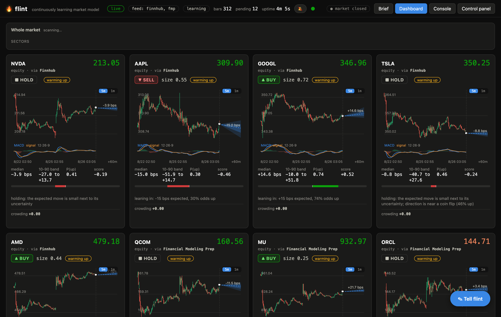
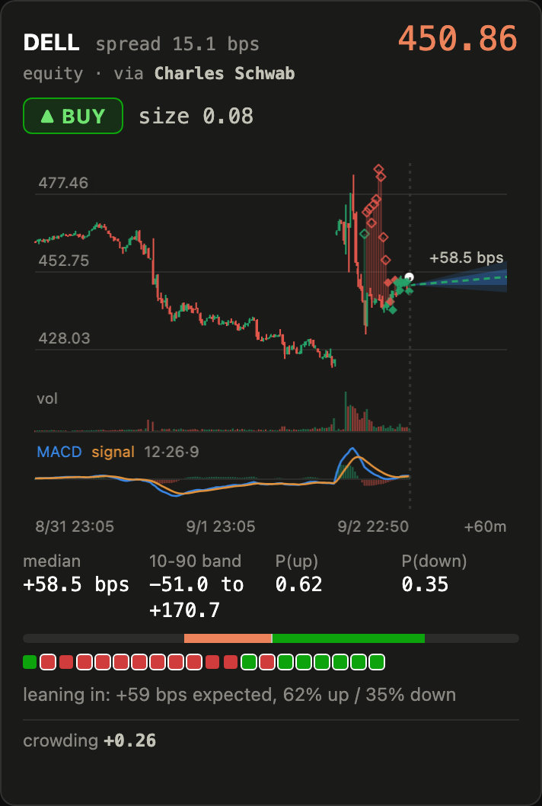
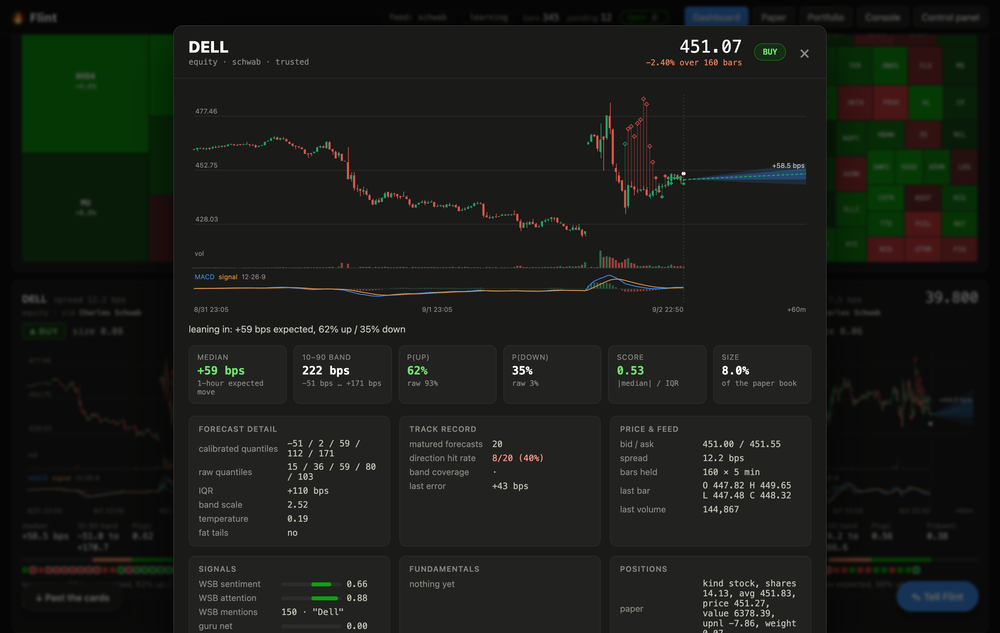
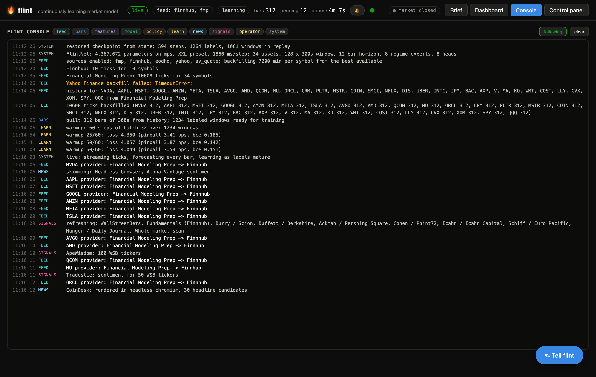

Flint is a self-hosted neural network that reads live market data, forecasts the next hour for a basket of stocks, and shows its reasoning as it goes. A local model even writes the daily brief. It runs on your machine and your keys stay with you.

A forecasting model, a trading dashboard, and a window into the model's head, in one thing you run yourself.
It trains online as its forecasts mature, and its calibration keeps it honest. When it has no real edge it holds, instead of trading noise.
Every stock gets a candlestick chart with MACD and a forecast fan. Cards rank by urgency and reorder in real time, the top fifty render first, and any chart flips between 5 and 1 minute bars.
Click any ticker anywhere, a card, the heatmap, a holding, a 13F line, and a detail view opens: a big chart, the calibrated forecast, its track record, signals, fundamentals, news and positions. The URL follows, so back and refresh work.
The movers radar draws as a treemap, area by market cap and colour by change, grouped by sector, trimmed on the fly so every block carries its ticker.
A control panel streams the model's consciousness across eight consoles, and a Console tab tails everything at once: the feed, the features, the forecasts, the policy, the training. Arrange the panel's sections however you like.
Small models summarize the tape, the macro backdrop, positioning and the smart money. A larger local model turns those notes into a plain newspaper column. It talks to a local model server, llama.cpp or Ollama, so nothing leaves the machine.
A panel of well-known investors, built from their real 13F filings and documented style, nudges the model. Burry, Buffett, Ackman, Icahn and others.
Breadth, sector rotation, volatility and a large movers watchlist give you and the model the full picture. Penny and small-cap movers included.
Everything runs on your machine. API keys sit in gitignored files and only ever talk to their own provider.
A first-run benchmark sizes the network to your hardware and uses the GPU when there is one, Apple silicon or NVIDIA, so it runs on a laptop, a workstation, or a DGX Spark. While the market is closed it keeps training on deeper history instead of idling.
It behaves less like a backtest and more like a trader who shows up every morning and keeps score.
Flint pulls intraday history, benchmarks your machine, and trains on the recent session before it goes live.
Real trades drive the charts. Each bar the model forecasts the next hour and turns it into a buy, sell or hold with a reason in plain English. Paper trades are stock or long options only, never a position with unlimited risk, and can run through the extended sessions.
An hour later every forecast is scored and the model recalibrates. You judge it on live accuracy over hours, not on how well it fit the past.



You need Python 3.12 and uv. For the written brief, run a local model with llama.cpp or Ollama.
# clone and install
git clone git@github.com:thingg-co/flint.git
cd flint
uv sync
# run it, then open http://localhost:8000
uv run flint
# optional: a local model for the daily brief (either works)
ollama pull qwen3.5 # Ollama, the default backend
llama-server -m model.gguf --port 8080 # or llama.cpp, with FLINT_BRIEF_BACKEND=openaiIt works out of the box on free, no-key data sources. On first launch a short walkthrough lets you add API keys for better feeds, and you can skip any of them. Everything, including the LLM brief, runs locally.